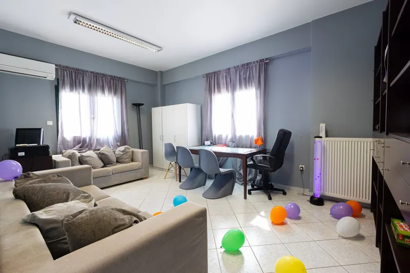
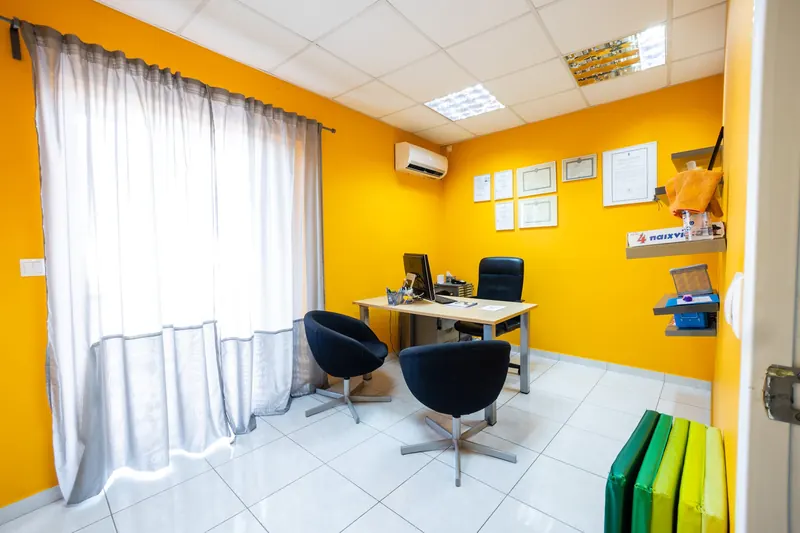

Ψυχοθεραπεία παιδιών και εφήβων
Αξιολόγηση και υποστήριξη για συναισθηματικές δυσκολίες, συμπεριφορά και σχέσεις.
Συναισθήματα · Σχέσεις · Αυτοεκτίμηση

Τι εξετάζουμε και πώς δουλεύουμε
Όταν το άγχος, η έντονη θλίψη, τα ξεσπάσματα ή η απόσυρση επιμένουν και επηρεάζουν την καθημερινότητα, είναι χρήσιμο να διερευνηθούν. Εξετάζουμε πότε εμφανίζονται, πόσο διαρκούν και πώς επηρεάζουν το παιδί στο σπίτι, στο σχολείο και στις σχέσεις του.
Η ψυχοθεραπεία προσαρμόζεται στην ηλικία, στο αναπτυξιακό επίπεδο και στις ανάγκες του παιδιού ή του εφήβου. Η συζήτηση, το παιχνίδι και οι δημιουργικές δραστηριότητες μπορούν να χρησιμοποιηθούν για την έκφραση και την επεξεργασία όσων το δυσκολεύουν.
Πώς γίνεται η αξιολόγησηΠότε να απευθυνθείτε σε ψυχολόγο
Μπορείτε να ζητήσετε αξιολόγηση όταν παρατηρείτε στο παιδί σας κάτι από τα παρακάτω.
Όλα τα παιδιά περνούν δύσκολες περιόδους. Οι παρατηρήσεις αυτές αξιολογούνται σε σχέση με την ηλικία του παιδιού και μεμονωμένα δεν αποτελούν διάγνωση.
Αναγνωρίζετε κάτι από αυτά; Μιλήστε μαζί μαςΆγχος και φόβοι
Έντονο ή επίμονο άγχος, φόβοι ή ανησυχίες που επηρεάζουν την καθημερινότητά του.
Θυμός και έντονες αντιδράσεις
Συχνά ξεσπάσματα θυμού ή έντονες αντιδράσεις, από τις οποίες δύσκολα ηρεμεί.
Λύπη ή απόσυρση
Επίμονη λύπη ή απόσυρση από πράγματα που το ευχαριστούσαν.
Ύπνος και φαγητό
Κοιμάται ή τρώει πολύ διαφορετικά από ό,τι συνήθιζε, χωρίς προφανή λόγο.
Σχέσεις με συνομηλίκους
Δυσκολεύεται να κάνει ή να κρατήσει φίλους, ή απομονώνεται.
Σωματικά ενοχλήματα
Πονοκέφαλοι ή κοιλόπονοι χωρίς προφανή αιτία, σε περιόδους έντασης.
Τομείς υποστήριξης
Οι στόχοι προκύπτουν από όσα μας λέτε εσείς και από όσα δείχνει το παιδί. Η δουλειά μπορεί να αφορά έναν ή περισσότερους από τους παρακάτω τομείς.
Διαχείριση του άγχους
Διερεύνηση των καταστάσεων που προκαλούν άγχος και ανάπτυξη τρόπων διαχείρισής του, ανάλογα με τις ανάγκες του παιδιού.
Συναισθηματική ρύθμιση
Αναγνώριση και έκφραση συναισθημάτων, διαχείριση θυμού και ενίσχυση της ικανότητας του παιδιού να αντιμετωπίζει τις δυσκολίες.
Σχέσεις και επικοινωνία
Επεξεργασία δυσκολιών με συνομηλίκους ή μέλη της οικογένειας, συγκρούσεων και εμπειριών απόρριψης.
Αυτοεικόνα και προσαρμογή
Υποστήριξη σε θέματα αυτοεκτίμησης και σε αλλαγές ή απώλειες που επηρεάζουν τη συναισθηματική κατάσταση του παιδιού.

Πώς οργανώνεται η συνεργασία
Ακούμε τι σας ανησυχεί
Ξεκινάμε με εσάς, χωρίς το παιδί. Μας λέτε τι σας ανησυχεί, από πότε, και πώς είναι μια συνηθισμένη μέρα στο σπίτι και στο σχολείο.
Γνωριμία και θεραπευτικοί στόχοι
Ακολουθεί η αξιολόγηση του παιδιού ή του εφήβου. Με βάση τα ευρήματα, διαμορφώνονται οι στόχοι και η κατάλληλη προσέγγιση.
Παρακολούθηση της πορείας
Η δουλειά με το παιδί συνδέεται με τη συνεργασία με τους γονείς. Οι στόχοι επανεξετάζονται σύμφωνα με την ανταπόκριση και τις ανάγκες που προκύπτουν.
Συχνές ερωτήσεις
Χρειάζεται να γνωρίζω ήδη τι συμβαίνει στο παιδί;
Όχι. Μπορείτε να περιγράψετε όσα παρατηρείτε και όσα σας ανησυχούν. Η αξιολόγηση μάς βοηθά να καταλάβουμε τις δυσκολίες και να συζητήσουμε μαζί σας την κατάλληλη υποστήριξη.
Πώς συμμετέχουν οι γονείς;
Οι πληροφορίες σας για την καθημερινότητα είναι μέρος της συνεργασίας. Συναντιόμαστε τακτικά μαζί σας για την πορεία και για όσα βλέπετε στο σπίτι.
Συζητήστε μαζί μας όσα σας προβληματίζουν
Επικοινωνήστε με το κέντρο που σας εξυπηρετεί για να οργανώσουμε την πρώτη συνάντηση.